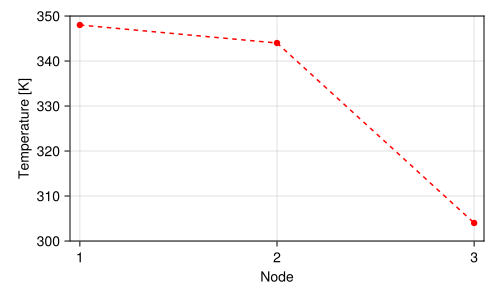
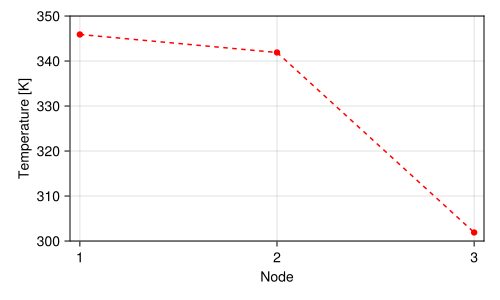

using CairoMakie
using LinearAlgebra
using Printf
using Unitful
# Stefan-Boltzmann constant.
const σ = 5.67e-08u"W/(m^2*K^4)";Steady-state heat transfer
No further words, let’s start by importing the required toolset:
Linear problem
Implementation of section 2.2.1 of Nithiarasu et al. (2016) of steady state heat transfer across a composite slab of materials with different thermal conductivities. In one side the slab is irradiated with a heat flux density \(q_1\) while the opposite face is subjected to a convective heat transfer with coefficient \(h\) and ambient temperature \(T_a\). The model to be solved can be stated as
\[ \frac{d^2T}{dx^2}=0 \qquad q_1 = -k_1\frac{dT}{dx} \qquad q_2 = h (T_3 - T_a) \]
Our goal in what follows is to implement equation (2.12) of the reference to be able to solve for nodal temperatures. To this end we need both the stiffness matrix and the forcing vector of the problem. The code that follows tries to mimic the mathematical implementation rather than following a general programming approach given the introductory level of this example.
Since each component of the composite slab is characterized by a conductivity across the element we provide a function conductivity for computing \(K=kAL^{-1}\). This is more expressive than simply hard-coding its definition directly in the stiffness matrix.
function conductivity(k, A, L)
return k * A / L
end;Below we implement the stiffness matrix constructor in terms of the required parameters:
function stiffness(h, k1, k2, L1, L2; A=1)
a1 = conductivity(k1, A, L1)
a2 = conductivity(k2, A, L2)
b0 = 0u"W/(m^2*K)"
return [ a1 -a1 b0
-a1 a1+a2 -a2
b0 -a2 a2+h*A ];
end;Similarly, the column forcing vector is given as:
function forcing(q, h, Ta; A=1)
return [ q*A; 0u"W/m^2"; h*A*Ta ];
end;As model parameters one needs to specity the thermal conductivities \(k\) and associated thicknesses \(L\) of plates and the known heat transfer coefficient \(h\) on the side the slab is exposed to convective heat transfer. All these values are provided below with respective physical units.
h = 5u"W/(m^2*K)"
k1 = 5.0u"W/(m*K)"
k2 = 0.5u"W/(m*K)"
L1 = 1.0u"m"
L2 = 1.0u"m";To complete the boundary conditions, the heat flux \(q_1\) and environment temperature \(T_a\) are given below.
q1 = 20.0u"W/m^2"
Ta = 300.0u"K";Now we are able to create the problem and inspect elements.
M = stiffness(h, k1, k2, L1, L2)3×3 Matrix{Quantity{Float64, 𝐌 𝚯^-1 𝐓^-3, Unitful.FreeUnits{(K^-1, m^-2, W), 𝐌 𝚯^-1 𝐓^-3, nothing}}}:
5.0 W K^-1 m^-2 -5.0 W K^-1 m^-2 0.0 W K^-1 m^-2
-5.0 W K^-1 m^-2 5.5 W K^-1 m^-2 -0.5 W K^-1 m^-2
0.0 W K^-1 m^-2 -0.5 W K^-1 m^-2 5.5 W K^-1 m^-2f = forcing(q1, h, Ta)3-element Vector{Quantity{Float64, 𝐌 𝐓^-3, Unitful.FreeUnits{(m^-2, W), 𝐌 𝐓^-3, nothing}}}:
20.0 W m^-2
0.0 W m^-2
1500.0 W m^-2Solution is found by solving the linear system with the backslash operator. Because the default operator does not support Unitful units, an overload required here. Since the problem is small we will use a matrix inverse here as an alternative.
T = inv(M) * f3-element Vector{Quantity{Float64, 𝚯, Unitful.FreeUnits{(K,), 𝚯, nothing}}}:
348.0 K
344.0 K
304.0 KBelow we inspect the solution at the nodal positions (filled dots). Since thermal conductivities were assumed constant in this case, dashed lines extrapolating the linear solution between the nodes are also provided.
Temperature profile across plate with convection boundary condition is presented in Figure 1.
with_theme() do
fig = Figure(size = (500, 300))
ax = Axis(fig[1, 1])
lines!(ax, ustrip(T); color = :red, linestyle = :dash)
scatter!(ax, ustrip(T); color = :red)
ax.xlabel = "Node"
ax.ylabel = "Temperature [K]"
ax.xticks = 1:3
xlims!(ax, (0.95, 3.05))
ylims!(ax, (300, 350))
fig
end
Nonlinear problem
Solving the linear problem of steady heat conduction was trivial, but for practical cases (even at low temperatures in many situations) radiation losses should also be taken into account in the currently convective side of the plate. Here we introduce a modification to the boundary condition \(q_2\) accounting for this heat transfer mode. Notice that another source of nonlinearity could be introduced through non-constant thermal conductivities of the media, but we let the reader implement this as an excercise since it is a trivial exntesion to what is provided in what follows.
\[ \frac{d^2T}{dx^2}=0 \qquad q_1 = -k_1\frac{dT}{dx} \qquad q_2 = h (T_3 - T_a) + εσ(T_3^4-T_a^4) \]
There are many ways of handling the nonlinearity introduced by the radiation term. A common approach is the factorization of \(T_3^4-T_a^4\) and reformulation of the boundary condition in terms of a global heat transfer coefficient \(U\). Because \(U\) depends on the last known temperature \(τ_3\) the problem needs to be solved iterativelly. The choice of \(τ_3\) notation is to distinguish it from the value \(T_3\) found by the linear problem solution.
\[ q_2 = U (T_3 - T_a) \qquad\text{where}\qquad U = h + εσ(\tau_3+T_a)(\tau_3^2+T_a^2) \]
The radiation terms introduce the need to provide the surface emissivity \(ε\):
ε = 0.90.9An one-liner globalhtc is provided to evaluate \(U\) at each iteration.
globalhtc(τ, Ta, h, ε) = h + ε * σ * (τ + Ta) * (τ^2 + Ta^2)
@show globalhtc(300u"K", Ta, h, ε)globalhtc(300 * u"K", Ta, h, ε) = 10.51124 W K^-1 m^-210.51124 W K^-1 m^-2Since the problem now needs to be solved iterativelly, it is worth creating a simple function that encapsulates the steps to be repeated at each iteration, i.e update the heat transfer coefficient, update stiffness matrix and forcing vector, solve for the new temperature estimate. Because this is a dummy problem we will not get an optimized matrix update, but simply call stiffness and forcing every iteration with the new value of U. Because there are many parameters, we create a function that returns another function with the fixed values allowing for a single update:
function createproblem(Ta, h, ε, k1, k2, L1, L2)
function step(τ)
U = globalhtc(τ, Ta, h, ε)
M = stiffness(U, k1, k2, L1, L2)
f = forcing(q1, U, Ta)
return inv(M) * f
end
return step
endcreateproblem (generic function with 1 method)The solution of the problem now is rather simple. One provides an initial guess which is used to compute a new solution estimate. Because under some circumstances the estimate could start wiggling and diverge, it is worth implementing a relaxation step interpolating the new and previous approximations as \(T_{n}=βT_{n}+(1-β)T_{n-1}\). In case \(\beta<1\) solution is slowly updated by giving a higher weigth to the previous estimate and the problem is said to be underrelaxed. Overelaxation is the opposite scenario but can be problematic in some cases. Some metric, here the maximum relative change in absolute value, must be used to determine solution convergence.
function solveproblem(T, step; maxiter = 20, rtol = 1.0e-15, β = 1.0)
τ = copy(T)
for i in range(1, maxiter)
τ[:] = β * step(T[3]) + (1 - β) * T
Δ = maximum(abs.(τ .- T) ./ T)
T[:] = τ
println("Residual $(i) ..... $(@sprintf("%.6e", Δ))")
if Δ < rtol
break
end
end
return T
endsolveproblem (generic function with 1 method)Below we make use of the created tooling to solve the model.
guess = [Ta; Ta; Ta]
step = createproblem(Ta, h, ε, k1, k2, L1, L2)
T = solveproblem(guess, step)Residual 1 ..... 1.530091e-01
Residual 2 ..... 3.141345e-05
Residual 3 ..... 1.564581e-07
Residual 4 ..... 7.792353e-10
Residual 5 ..... 3.880841e-12
Residual 6 ..... 1.920556e-14
Residual 7 ..... 0.000000e+003-element Vector{Quantity{Float64, 𝚯, Unitful.FreeUnits{(K,), 𝚯, nothing}}}:
345.89328827496115 K
341.89328827496115 K
301.89328827496115 KTemperature profile across plate with radiation enabled is presented in Figure 2.
with_theme() do
fig = Figure(size = (500, 300))
ax = Axis(fig[1, 1])
lines!(ax, ustrip(T); color = :red, linestyle = :dash)
scatter!(ax, ustrip(T); color = :red)
ax.xlabel = "Node"
ax.ylabel = "Temperature [K]"
ax.xticks = 1:3
xlims!(ax, (0.95, 3.05))
ylims!(ax, (300, 350))
fig
end